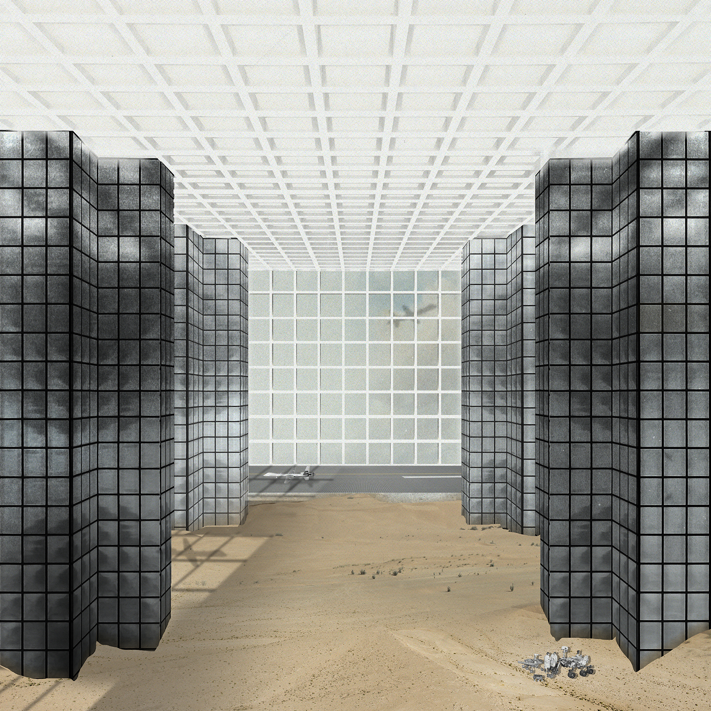
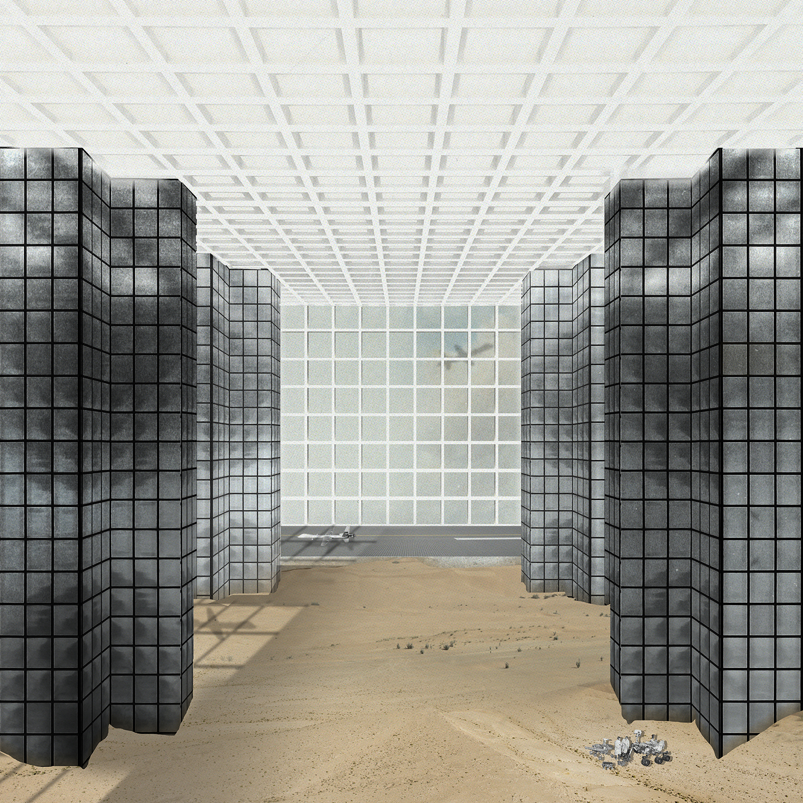

Campus
B.Arch Thesis, Carnegie Mellon University. Ongoing.
Architecture: a medium for the production of Utopias, and the complex process by which they attempt to become material. Much Architecture devotes itself to the reproduction of the material conditions of the status quo. Architecture creates facilities (from Latin, facile, lit. trans: “easily”, that which makes easier), for the processes of the dominant social framework.
The impossible dreams of Utopia, however, do not negate its conceptual value. The ‘object’ of the project ‘Utopia’ is not so much a Sisyphean chase after a perfected image-world, but rather the production of a critical mirror. All Utopias, while literal No-places, are reflections—inverted, mirrored reproductions—of immediately apparent every-wheres.
The global stock of Universities constitute a vast catalog of unique No-places situated within the context of the late modern every-where. A landscape of failed Utopias, the history of Universities is colored by a perennial struggle: the essential protection of sacred Ideals from the forces that simultaneously support, and compromise the project of Universitas. This irreconcilable Gordian knot is arguably the root of the diversity of processes that the contemporary University now engages. These processes no longer constitute a singular search for Truth, but rather a complex ecology of often competing, even conflictual aims and exchanges at all scales.
The scenes outlined in Campus interrogate the place of this ubiquitous institution within the complex milieu of late capitalism, and ask: what might happen when Architecture is no longer the tool for mediating conflict by separation, a fortification holding the forces of Capital at bay, but rather is poised as an instrument for the radical accommodation of conflictual Ideologies—a frame for the hyperbolic juxtaposition of simultaneous, competing realities?
Campus recognizes the absurd realities of the contemporary University as a very real dream, a compromised utopia. It is not merely a critical appraisal of the University; the scenes propose a series of situations that exploit the institution’s late modern reality for the production of new institutional and architectural possibilities.
 
